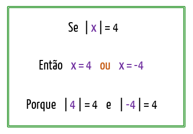

Portfólio de Matemática
Mateus Mazon Parcianello

|
|
Portfólio de Matemática |
Mateus Mazon Parcianello |
|
|---|
Não encontrei tanta dificuldade assim nas funções quadráticas, os cálculos são até que tranquilos,
o problema eu acho que é que como é um conteúdo mais extenso, possui muitos procedimentos e situações,
então acredito que o desatentamento a essas coisinhas que são mais deixadas de lado foi o que me fez
ir meio mal na prova, em que tinha alguns calculos que eu não sabia fazer direito por esses motivos.
Por exemplo na prova teve algumas questões em que eu não sabia passar oa valores para a equação para
resolver ela.
Resumindo: Eu sabia como calcular, só não sabia como aplicar.
Eu nunca tinha ouvido falar de módulo e não esperava esse tipo de função, então acabei sendo pego
desprevinido, e como eu vi que era um conteúdo mais específico, nem me preocupei tanto em ir atrás.
A parte da função era tranquila, o problema era resolver o módulo que eu não tinha entendido.
Não sabia direito quando e aonde tinha que se modificar os sinais e esse foi o ponto chave que
me fez errar os calculos, e foi um ponto que eu nem me toquei para estudar.
Acabei estudando mais como fazer as funções do que as especificidades dela em si.

Funções quadráticas
Funções modulares